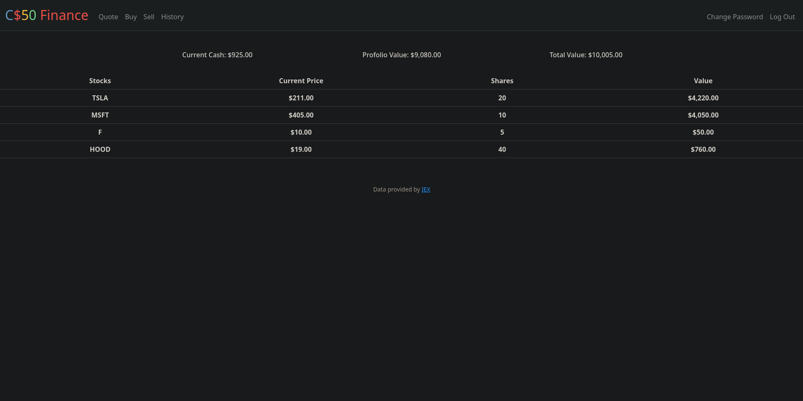
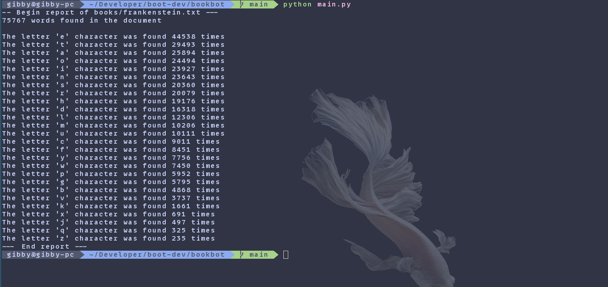

Projects
Home | ResumeAsteroids
Finance
- 
- Developed a dynamic web application using Flask to simulate stock trading with paper money, addressing the common challenge for new investors of learning market dynamics without risking real funds
Bookbot
- 
- Developed a command-line application in Python that does data analysis on text files, or rather, entire novels like "Frankenstein", "Moby Dick" or "Pride and Prejudice"